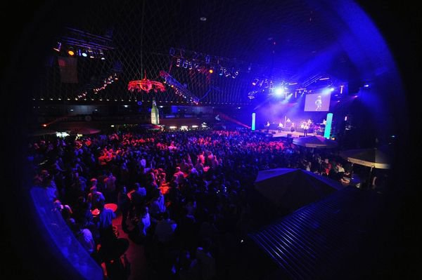

1992 bis 1999: Schlagzeugunterricht an der Landesmusikschule Gaspoltshofen bei Manfred Krenmair und Bernhard Berger.
2000: Schlagzeugunterricht an der Landesmusikschule Gunskirchen bei Manfred Krenmair.
2001 bis 2003: Klavierunterricht und Gehörbildung bei Martin Gasselsberger.
2003 bis 2004: Lehrgang Schlagzeug der Popularmusik an der Universität für Musik u. darstellende Kunst Wien.
Oktober 2004: Studium IGP (Instrumentalgesangspädagogik) mit Hauptfach Schlagzeug und Percussion der Popularmusik und Schwerpunkt Klassisches Schlagwerk an der Universität für Musik u. darstellende Kunst Wien. Unterricht bei Manfred Krenmair, Fritz Ozmec und Oliver Madas.
September/Oktober 2010: Auslandsaufenthalt in den USA in Los Angeles – Privatunterricht bei Bernard Galane und Gaststudent am Musicians Institute in Hollywood.
Jänner 2012: Abschluss des IGP Studiums mit Auszeichnung – Verleihung des akademischen Grades „Bachelor of Arts“.
März 2012: IGP - Masterstudium an der Universität für Musik u. darstellenden Kunst Wien. Unterricht bei Fritz Ozmec und Mario Lackner.
Juni 2016: Abschluss des IGP Masterstudiums mit Auszeichnung - Verleihung des akademischen Grades "Magister Artium".
Privatunterricht und Masterclasses bei: Thomas Lang, Jojo Mayer, Bernard Galane, Dave Elitch, Gorden Campbell.
Musikalische Tätigkeit
2004 bis 2006: Mitglied der Pop/Rock Coverband „Racers“
2005 bis 2006: Schlagzeuger der Backingband von Daniel Küblböck (bekannt aus der deutschen TV – Castingshow „Deutschland sucht den Superstar“) – „Liebe Nation“ Tour durch Deutschland
2006: Albumproduktion der Band Siegall.
2007 bis Februar 2009: Mitglied der Pop/Rock Coverband „Streetlife“
Seit Februar 2009 Mitglied der Show- und Galaband „Starmix“ (120 Auftritte pro Jahr in Deutschland, Österreich, Schweiz, Italien) www.starmix.at
2009 bis 2010: Albumproduktion der Band Troebinger – 2011 Albumrelease in Österreich.
2010 Musikvideoproduktion der Singleauskopplung „Wolkenbruch“ – regelmäßige Austrahlung auf GoTV
Weitere Künstler/Bands: Julian Heidrich, Katharina Aigner, Agnes Milewski, Marcin Suder, Inspirational Corner, Big Band der Universität für Musik u. darst. Kunst Wien.
Unterrichtstätigkeit
Musikschulverband Waidhofen an der Ybbs
VHS Heiligenstadt
Musikschule Polyhymnia
Privatunterricht
Bilder

Bild 1 von 12
Bild 2 von 12
Bild 3 von 12
Bild 4 von 12
Bild 5 von 12
Bild 6 von 12
Bild 7 von 12
Bild 8 von 12
Bild 9 von 12
Bild 10 von 12
Bild 11 von 12
Bild 12 von 12
Schlagzeugunterricht
Individuelles Unterrichtskonzept
Für Kinder, Jugendliche und Erwachsene
Zentral im 1. Bezirk in Wien
Mein Unterrichtsraum:
Mein Probe- und Unterrichtsraum im 1. Bezirk
DW - Collector Series Schlagzeug für Pop/Rock
Galane Jazz Schlagzeug
Recording Equipment für Schlagzeugaufnahmen
2x Focusrite 18i20 Audiointerface
Bild1
Mein Unterrichtskonzept:
In meiner bisherigen Laufbahn als Schlagzeuglehrer habe ich vor allem gelernt, dass jeder Schüler anders ist. Das heißt jeder hat unterschiedliche Stärken sowie Schwächen und jeder hat auch sein eigenes Lerntempo. Auch der Zugang zum Instrument oder generell zur Musik ist bei jedem Schüler unterschiedlich!
Das Wichtigste beim Schlagzeug spielen: Es sollte Spaß machen! Ohne Spaß entsteht keine Motivation! Und Motivation möchte ich fördern! Ich versuche mit jedem Schüler gemeinsam Ziele zu setzen. Durch die Erstellung eines individuellen Unterrichtskonzeptes versuche ich diese Ziele zu erreichen, ohne den Schüler über- oder unterzufordern.
Ein wichtiger Teil meines Unterrichtes ist das Spielen mit Musik! Das ist auch das was am meisten Spaß macht! Ich versuche sobald wie möglich, erste einfache Songs mit den Schülern zu spielen. Dafür verwende ich sogenannte Playalongs (Musikstücke ohne Schlagzeug) zu denen die Schüler dazu spielen! In meinem Proberaum können auch Audio-Aufnahmen erstellt werden! Zur Selbstreflexion ist dies immer sehr hilfreich! Themen, die immer wieder im Unterricht vorkommen (Anfänger sowie Fortgeschrittene):
Haltung
Handtechnik, Fusstechnik
Unabhängigkeit/Koordination
Grooves & Fills, verschiedene Stilistiken
Timing, Feeling, Spielen mit Metronom
Playalongs
Improvisation
Sound
richtiges Üben
Häufig gestellte Fragen:
Ab welchem Alter macht Schlagzeugunterricht Sinn?
Ich unterrichte Kinder ab ca. 7Jahren! Für jüngere Kinder macht meistens musikalische Früherziehung mehr Sinn als Instrumentalunterricht! Am besten einfach mal eine kostenlose Schnupperstunde buchen!
Brauche ich ein eigenes Instrument?
Ein eigenes Instrument ist auf jeden Fall empfehlenswert! Ganz am Anfang reicht jedoch auch eine Übungstrommel oder Übungspad (nahezu lautlose Trommel zum Üben) und ein Paar Schlagzeugsticks. Da das Schlagzeug sehr laut sein kann, ist das Spielen abseits eines Proberaums zum Beispiel in einer Wohnung fast nicht möglich!
Für die Lösung dieses Problems gibt es mehrere Möglichkeiten:
ein elektronisches Schlagzeug
spezielle dämpfende Felle sowie lautlose Becken (Zildjian L80)
günstige Proberäume inklusive Instrument speziell zum Üben gemietet
Sind musikalische Vorkenntnisse notwendig?
Nein, es sind keine Vorkennnisse notwendig!
Wo findet der Unterricht statt?
Der Unterricht findet in meinem top ausgestatteten Proberaum im 1. Bezirk in der Walfischgasse statt!
Preise:
Ich halte grundsätzlich 30 Minuten oder 55 Minuten lange Unterrichtseinheiten! Besonders für Kinder, die gerade anfangen, ist eine 30 Minuten lange Einheit am besten.
30 Minuten Einheit:
einmalig und flexibel: 30€
5er Block bestehend aus 5 Einheiten: 140€ (28€/Einheit)
10er Block bestehend aus 10 Einheiten: 260€ (26€/Einheit)
55 Minuten Einheit:
einmalig und flexibel: 40€
5er Block bestehend aus 5 Einheiten: 190€ (38€/Einheit)
10er Block bestehend aus 10 Einheiten: 360€ (36€/Einheit)
Zum Kennenlernen biete ich eine kostenlose Schnupperstunde (30 Minuten) an!